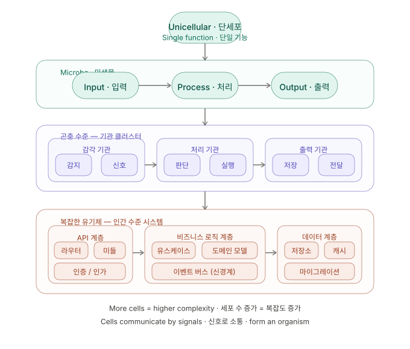

Cell Coding 세포코딩
biological architecture · organic computation
role-driven · signal-based · self-organizing
Like human cells, every unit of code has a distinct role. Independent yet organically connected cells form systems that live and breathe — a new philosophy of programming.
인간의 세포처럼, 코드의 모든 단위는 고유한 역할을 가진다. 독립적이면서도 유기적으로 연결된 세포들이 모여 살아 숨쉬는 시스템을 만드는 새로운 코딩 철학.
Why Cell Coding
Why Cell Coding exists · 왜 이 개념이 필요한가
Classical software assumed a narrower input-process-output frame. Physical AI now requires many sensing channels and many action channels at once, so we need a model of cooperating functional cells rather than a single monolithic pipeline.
고전 소프트웨어는 비교적 좁은 입력-처리-출력 프레임을 전제로 했다. Physical AI는 다중 감각 채널과 다중 행동 채널을 동시에 요구하므로, 단일 거대 파이프라인이 아니라 기능 세포의 협업 모델이 필요하다.
키보드/마우스 중심 시대의 소프트웨어는 이산적인 I/O 이벤트로 상호작용을 모델링할 수 있었지만, 구현형 AI는 연속적인 다중 모달 감지와 계층적 물리 행동을 처리해야 한다.
Cell Coding은 역할 기반 세포, 막 계약, 신호 기반 협업을 통해 조직-기관-유기체 계층의 소프트웨어를 모델링한다.
Physical AI scenarios | Physical AI 시나리오
거미 로봇은 시각·청각·촉각·화학 맥락을 받아 보행·거미줄·화학 작동을 만들며, 감각·행동 세포가 지형에 적응한다.
휴머노이드는 시각·고유수용감각·균형·손 촉각·음성을 처리하며, 보행·파지·제스처·표정은 균형·조작·상호작용 기관의 협업으로 표현한다.
반려(PET) 로봇은 주인 존재·터치·음성 톤·가정 맥락을 읽고, 따라가기·발성·위로 행동은 정서·안전 세포 네트워크로 모델링한다.
Process Architecture
From I/O lanes to functional cells · I/O 레인에서 기능 세포로
Classical I/O hides complexity in three boxes. Cell Coding decomposes each box into cells and connects them by signals, not direct calls.
고전 I/O는 복잡도를 세 개 상자에 숨깁니다. Cell Coding은 각 상자를 세포로 분해하고, 직접 호출이 아닌 신호로 연결합니다.
Four levels — Overall (Modeling/Coding/Interworking) → Flow lanes (Sense/Decide/Act) → Functional pairs → Component cells — map to genome, tissue, cell, and membrane/signal contracts.
4단계 — 전체(모델링/코딩/연동) → 흐름 레인(감각/판단/행동) → 기능 쌍 → 구성 세포 — 는 genome, tissue, cell, 막/신호 계약에 대응합니다.
Core Principles
Three laws of cells · 세포의 3대 법칙
Biology optimized these principles over billions of years. Three simple laws govern everything in Cell Coding.
생물의 세포가 수십억 년에 걸쳐 최적화한 원리를 코드에 적용한다. 단순하지만 강력한 세 가지 법칙이 모든 것을 결정한다.
모든 세포는 단 하나의 명확한 역할을 가진다. 심장세포는 펌핑만 한다. 신경세포는 신호만 전달한다. 코드도 마찬가지다. 하나의 세포, 하나의 책임.
세포막은 무엇이 들어오고 나갈지를 결정한다. 코드에서 막은 인터페이스이자 계약이다. 선택적 투과성 — 필요한 신호만 통과시킨다.
세포는 메서드를 직접 호출하지 않는다. 신호를 보내고, 반응한다. 이 간접성이 시스템을 유연하고 확장 가능하게 만드는 핵심이다.
Complexity Scale
From unicellular to organism · 단세포에서 유기체로
System complexity is determined by cell count and organization level. A small script is unicellular; a large platform is human-scale.
세포의 수와 조직화 수준에 따라 시스템의 복잡도가 결정된다. 작은 스크립트는 단세포이고, 대규모 플랫폼은 인간이다.
Complexity scale diagram · 복잡도 계층 다이어그램

See also: Concept Overview · 개념 구조 (process architecture)
Paradigm Comparison
How Cell Coding differs from OOP · OOP와 무엇이 다른가
It may look like OOP, but the starting philosophy differs. OOP encapsulates data; Cell Coding designs for survival and response.
얼핏 객체지향처럼 보이지만, 철학의 출발점이 다르다. OOP는 데이터를 캡슐화하고, 세포코딩은 생존과 반응을 설계한다.
Pseudocode Example
What Cell Coding looks like · 세포코딩이 생긴 모습
The language spec is not final yet, but the shape is clear. Each cell is declarative, role-specific, and unaware of others.
아직 언어 스펙은 확정되지 않았다. 하지만 이런 모습이 될 것이다. 각 세포는 선언적이고, 역할이 명확하며, 서로를 모른다.
Embodied systems — spider, humanoid, or PET — can be expressed as sensing, decision, and action cells, where each layer communicates only via signals and membrane contracts.
거미·휴머노이드·반려(PET) 로봇 같은 구현체 시스템은 감각 세포·판단 세포·행동 세포로 표현할 수 있고, 각 계층은 신호와 막 계약을 통해서만 통신한다.
// ── 단세포: 단일 순수 기능 ────────────────────────────── cell Validator { role: "입력값 유효성 검사" membrane { accepts: RawInput emits : ValidSignal | ErrorSignal } on(RawInput input) { if (valid(input)) { emit ValidSignal; } else { emit ErrorSignal; } } } // ── 조직: 관련 세포의 flow ────────────────────────────── tissue AuthTissue { flow linear { TokenParser -> Authenticator -> SessionManager } } // ── 기관: 조직들의 협력 ────────────────────────────────── organ UserOrgan { tissues { AuthTissue ProfileTissue ActivityTissue } exports { UserRegistered UserLoggedIn UserDeleted } } // ── 유기체: 전체 시스템 ────────────────────────────────── organism AppOrganism { organs { UserOrgan PaymentOrgan NotifyOrgan } nervous EventBus { UserOrgan.UserRegistered -> NotifyOrgan } immune ErrorPolicy { on DatabaseError { strategy: retry; retries: 3; } } }
Platform Vision
Three platform pillars · 플랫폼이 제공할 세 가지
A Cell Coding platform needs three core tools to become real.
세포코딩을 현실로 만드는 플랫폼은 세 가지 핵심 도구를 제공해야 한다.
Python / TypeScript 위에 @cell, @tissue, @organ 데코레이터로 동작하는 경량 언어 확장. 기존 코드베이스에 점진적으로 도입 가능하다.
실시간으로 세포의 신호 흐름을 시각화하는 IDE 플러그인. 어느 세포가 어떤 신호를 주고받는지 생체 현미경처럼 관찰할 수 있다.
각 세포를 격리된 환경에서 테스트하는 실험실. 세포의 독립성이 보장되므로 테스트가 극적으로 단순해진다. 세포 단위 TDD.
All code is
alive
모든 코드는 살아있다
Cell Coding is not just a methodology — it is a new philosophy of programs. Imagine code that grows, differentiates, and adapts.
세포코딩은 단순한 방법론이 아니다. 프로그램을 바라보는 새로운 철학이다. 코드가 자라고, 분화하고, 적응하는 것을 상상해보라.
세포코딩 (Cell Coding) — Concept Paper v0.1